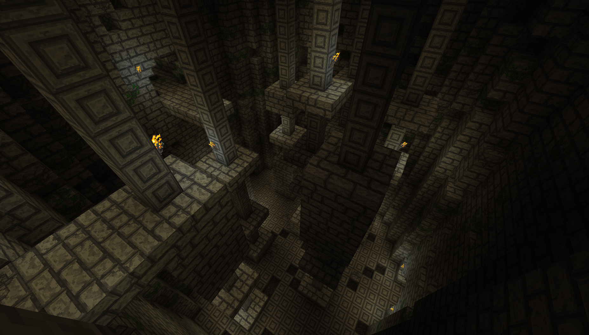
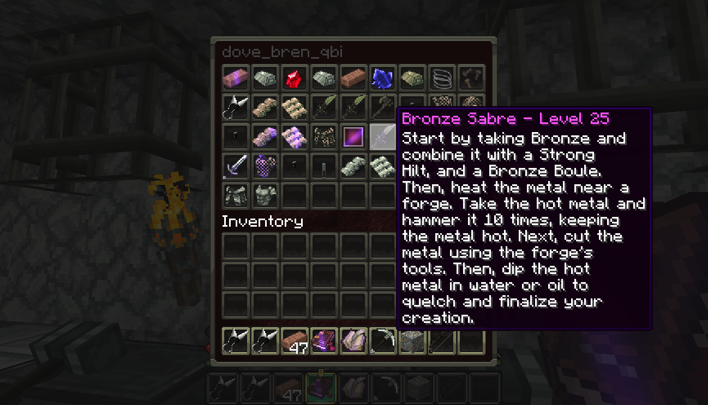
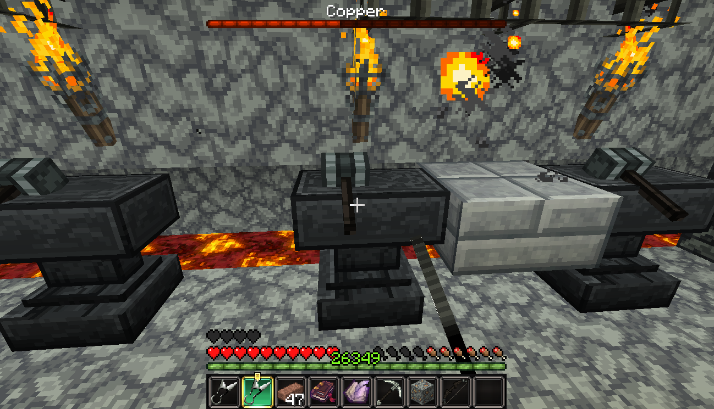

Spotlight Project
QuestManager/Iron Tale
My current feature project is actually a hybrid project. The two projects are called QuestManager and Iron Tale. I would like to showcase these two together, as Iron Tale is a MMORPG Minecraft world created almost exclusively through QuestManager. Since this really is two projects, I've broken the discussion down into two sections.
QuestManager
QuestManager is a Minecraft Plugin that transforms the game into a very diverse and dynamic MMORPG. QuestManager (QM) works as a framework, creating a system through which server admins can create entire worlds for players. QM is a unique plugin in that it operates almost entirely through config files. This means that users do not need to write a single line of code in order to create their own experiences.
QM is implemented through the Spigot API. It works as a server plugin that changes many aspects of the game without requiring clients to have the plugins themselves. It works through a clever combination of chat-based clickable menu's and vanilla GUIs. Quests are created by server administraters through the creation of special configuration files. When the server is started, these files are read in, and spawn up quests. The creation of quests involves everything, from creating NPCs with dialogue lines and inventories, defining quest objectives and goals, creating branching quest lines, etc.
Quest Definitions
At the core of QM is the definition of a quest. Quests have many different parameters to give as much power to the quest creator as possible. Quests have simple data (such as the name of the quest, and how much money the players receives after completing it) and complex data (like the list of goals and objectives, as described below). QM tries to remain as transparent as possible, allowing creators to create any number of diverse sets of adventures, worlds, or universes for their players as they would like.
name: "Basic Mixing"
description: "Mixing 101"
savestate: true
requireparty: false
useparty: false
fame: 30
requiredquests:
- "*Cooking"
repeatable: false
moneyreward: 0
titlereward: ""
goals:
1:
type: "goalcnf"
name: "Apples"
description: "Make Apples"
requirements:
1:
CHEST:
type: "chestr"
description: "Fetch supplies"
chest:
==: QMChest
location:
...
More specifically, quests are defined as a set of quest objectives. Each objective has a series of requirements that are completed individually. As one objective is completed, the quest advanced to the next. This continues until there are no more objectives available, which allows the quest to be turned in and completed. Alongside the list of objectives, quests have a large amount of metadata that allows them to function as they should. This includes a list of quests that must be completed by a player before they can take the quest, name and description information for the quest, how the quest should save its state, and whether the player needs a party to take it. In addition, quests are further defined with data about what NPCs are involved, what lines of dialogue should be spoken, what the rewards are that may be obtained from the quest, and what happens when the quest is failed.
QM takes all of this information, and moves it into Minecraft. Suddenly, NPCs exist that talk to you when you interact with them. Monsters are spawned systematically rather than randomly, and with preset armors and attributes. Players' equipment is damaged when they die, and must be repaired at a repair shop. Players can toggle options, and write notes in their journal. As they perform actions, players advance in different skillsets that help them succeed in combat or commerce.
Feature List
More detailed information can be found by visiting QM's project page. However, listed below are a handful of the more important and impressive features of QuestManager:
- Unlimited quests of unlimited length
- NPCs that talk, trade, or craft for the player
- 22 Player skills, with API to add custom ones
- Individual player and quest tracking, for a real MMORPG feel
- Custom monster spawning and spawning behavior
- No need to program a thing by using config files instead
- and so much more!
Iron Tale
Iron Tale is an MMORPG world created using QuestManager. It features 197 quests, 10 unique towns/cities, hundreds of NPCs, a tried-and-balanced magic system, fine-tuned skill progression, and over 300 regions with dedicated enemy spawns! Iron Tale has been deployed both on the NMT Minecraft Club Server and locally for family and friends.
While Iron Tale originated as a way of testing the QM framework as I developed it, it evolved into a expansive universe of its own very quickly. The latest expansion of Iron Tale (Iron Tale 1.4) has over 120 hours of gameplay, excluding all party and crafting gameplay. Iron Tale is complete with a spanning Main Story, balanced economy, and unique challanges for both solo players and parties of players.
Main Story
The main story for Iron Tale was written in part by myself, and in part by Gabriel King. It ( SPOILERS ) begins with the slow realization that the undead are beginning to rise from caves and tombs alike, and in increasing volumes. Depending on how the player starts the main story, they may be introduced to the dilema as the hero of the people, or as some second-hand knowledge to a mercenary. Nonetheless, the player is eventually lead to uncover details about the emerging dead for themselves and of their own motivation. As they progress, they discover that the undead are emerging from the gates of Hell itself by some unknown force. Through their adventure to find out more, they discover the lands of magic (previously hidden from the world) and the lore they contain; the forefathers of the current world came from a far-away plane collapsing under its own greed. More recently, greed again captured the wills of the magicians, and some few broke off and sought the power of the old ways. These few were sealed away in the Hellish land from which undead now emmerge. In order to stop them, the player must venture through the portals to vanquish the evils that sought to reclaim the world from the other wide.
Iron Tale does not have a fixed starting route. The player is dumped after a short tutorial into the wilderness, and must use knowledge obtained from the tutorial and from nearby land markings to make their way to civilized land. At this early point, there are four major cities that are available to the player: Eldith - the trade city, Andester - the mining city, Lunasce - the smith's city, and Valencia - the lumberjack's city. Each location offers unique experiences, as citizens and city officials treat you in different ways. As players begin to progress, they can eventually begin the main story quest.
Following the main story, the player is taken from the central lands where they start through a whole slew of environments. Environments range from the light woods they start in to sandy beaches, thick forests, deep caves, and expansive deserts. Each location has unique enemy types and attributes, and even more unique towns and people.
Alongside the main story are a large number of side quests. These provide food, money, weapons, and armor early on, and eventually evolve into chains and branches of quests that could lead to unique relics, powerful spells, or brazen titles. While most quests are self-contained, others affect which you can take in the future, or what reward you end up getting.
Game Development Rundown
While QM does much of the work of making this sort of MMORPG style game is available to a Minecraft server, there was still a lot of work to be done to create Iron Tale. Each and every quest involved creating NPCs with meaningful dialogue. Quest descriptions (and objective descriptions) needed to be strong enough to guide the player through the task. Enemies should provide the right amount of challenge to the player, and require the player to plan out their skills and weapons. Towns could have shops, and each shop needed items at appropriate rates. Inns should charge the correct fee. Skill progression should be balanced to aid the player and allow them to specialize, but not make the game too easy. Gathering and Crafting skills should be fun and inviting, and also rewarding. Crafts, quest rewards, and loot should be exciting and useful, while still allowing a place for less-special equipment. The list goes on and on and on.
Some key points I would like to bring out of the experience, however, are:
- Quest Design - keep it engaging and interesting
- Combat Progression - smooth while still challenging
- Level Design - pretty, functional, and appropriate
- Enemy Design - reinvent enemies, rather than recolor them
- World Layout - where are all the places? How do they fit together
- User Testing - watch someone play, and take notes
The amount of detail it took to get where Iron Tale is today is immense. The last expansion only added about 50 quests, but took me the most time out of all of them. This was because I really wanted to sit down and finish drawing up the world map, working through the main story in my head, and visualizing the rest of the journey the player would take. In addition, this expansion focused more on combat and skill progression, and took much more rebalancing than any of the previous had.
Currently, Iron Tale has not been publically published on any site. This is mainly due to all the different components that come together aren't set up to be deployed in a streamlined manner. However, a copy of all of Iron Tale is available to anyone with request.